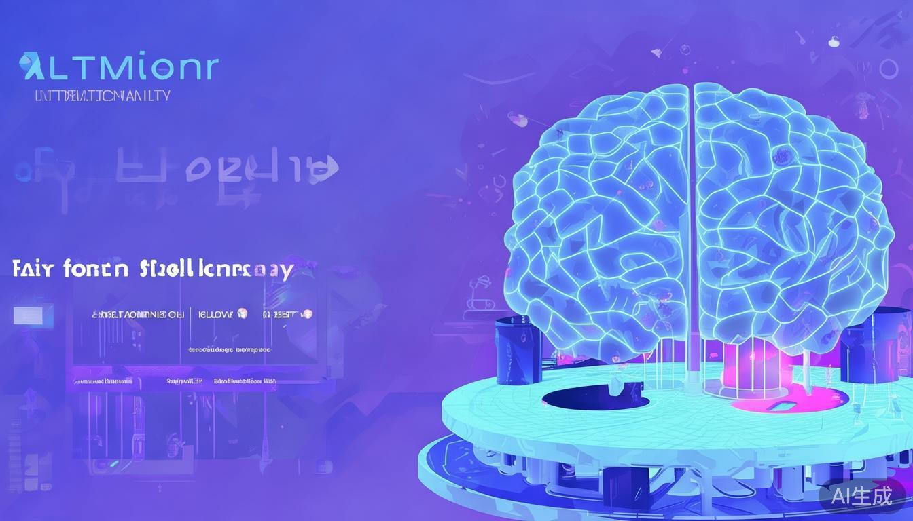

IoTMonitor 物联网监控
白驹 ccowork · 自学路线 毕业设计 24 号
24 号毕业设计：IoTMonitor 物联网监控
工业场景中设备故障停机每年造成超万亿损失，传统人工巡检存在漏报、滞后问题，IoTMonitor 基于边缘采集+大模型 Agent 实现设备实时监控、异常告警与预测性维护，完成项目可掌握 IoT 数据处理、时序分析、Agent 工具调用全栈能力。
项目简介
IoTMonitor 是面向中小型工厂的轻量化物联网监控 Agent 系统，针对水泵、电机、空压机等通用工业设备，实现从传感器数据采集、传输、清洗到智能分析、告警推送、故障预判的全链路闭环。系统采用边缘端+云端协同架构，边缘侧负责低延迟数据采集与初步过滤，云端负责大模型推理、时序预测与可视化展示，无需部署重型工业互联网平台即可快速落地，支持 MQTT、Modbus 两种主流工业协议接入，单节点可支持 1000+ 设备并发接入，端到端告警延迟低于 2 秒。
功能特性

- 多协议设备接入：支持 Modbus RTU/TCP 直连传感器、MQTT 网关上报两种数据接入方式，自动解析温度、振动、转速、电流等 12 类通用工业指标
- 实时异常告警：基于 3σ 规则+孤立森林算法识别阈值越界、趋势突变两类异常，支持飞书/企业微信/短信多渠道分级告警，自动关联设备历史故障记录
- 预测性维护：基于 LSTM 时序模型预测未来 72 小时设备指标走势，提前识别轴承磨损、电机过载等渐进式故障，输出维护建议与剩余使用寿命估算
- 智能监控 Agent：集成通义千问/ Llama 3 大模型，支持自然语言查询设备状态、统计故障频次、生成运维报表，自动调用工具完成数据拉取与分析
- 可视化监控大屏：基于 Grafana 搭建实时看板，展示设备在线状态、指标趋势、告警分布、维护计划，支持自定义指标阈值与告警规则
- 故障知识库：自动沉淀历史告警与处置记录，构建向量知识库，新告警触发时自动匹配相似历史案例，给出可落地的排查步骤
技术架构
| 组件 | 技术选型 | 作用 |
|---|---|---|
| 边缘采集层 | Python+pymodbus+paho-mqtt | 对接传感器/PLC，完成数据初步清洗、边缘阈值过滤，上报至云端消息队列 |
| 消息中间件 | EMQX 5.0 | 高并发 MQTT 消息 broker，支撑百万级消息吞吐，实现设备数据路由 |
| 数据存储层 | InfluxDB 2.7+Redis 7.0+Milvus 2.3 | InfluxDB 存储时序指标数据，Redis 缓存实时设备状态与告警规则，Milvus 存储故障知识库向量 |
| 智能分析层 | scikit-learn+PyTorch+LangChain | 孤立森林实现异常检测，LSTM 实现指标预测，LangChain 搭建监控 Agent 工具链 |
| 大模型层 | Qwen-7B-Chat / 通义千问API | 负责自然语言交互、告警根因分析、维护报告生成 |
| 展示交互层 | FastAPI+Grafana+Vue3 | FastAPI 提供后端接口，Grafana 搭建监控大屏，Vue3 实现管理后台与告警配置 |
架构说明：整体采用云边协同分层设计，边缘端部署在工业网关，仅需 Python 环境即可运行，断网时可本地缓存 7 天数据并触发本地声光告警；云端所有组件支持 Docker Compose 一键部署，模块间通过 RESTful API 与 MQTT 消息解耦，可按需替换大模型、存储组件，适配不同规模的工厂场景。
核心代码骨架
# 模块1：边缘数据采集与上报模块 edge_collector.py
import time
import random
from pymodbus.client import ModbusTcpClient
import paho.mqtt.client as mqtt
import json
# 初始化Modbus客户端（对接本地PLC/传感器）
modbus_client = ModbusTcpClient('192.168.1.100', port=502)
# 初始化MQTT客户端（连接云端EMQX）
mqtt_client = mqtt.Client(client_id=f'edge_gateway_{random.randint(1000,9999)}')
mqtt_client.username_pw_set('iot_user', 'iot_password')
mqtt_client.connect('你的云端EMQX地址', 1883, 60)
# 设备指标采集配置（对应传感器寄存器地址）
METRICS_CONFIG = {
"motor_001": {"temp": 0x0001, "vibration": 0x0002, "current": 0x0003}
}
def collect_and_report():
"""周期采集设备数据，边缘初步过滤后上报云端"""
while True:
for device_id, regs in METRICS_CONFIG.items():
# 读取传感器寄存器数据
temp = modbus_client.read_holding_registers(regs["temp"], 1).registers[0]/10
vibration = modbus_client.read_holding_registers(regs["vibration"], 1).registers[0]/100
current = modbus_client.read_holding_registers(regs["current"], 1).registers[0]/10
# 边缘阈值初步过滤，异常数据优先上报
is_edge_alarm = temp > 85 or vibration > 7.5 or current > 15
payload = json.dumps({
"device_id": device_id,
"ts": int(time.time()*1000),
"metrics": {"temp": temp, "vibration": vibration, "current": current},
"edge_alarm": is_edge_alarm
})
# 上报到MQTT对应主题
mqtt_client.publish(f"iot/device/{device_id}/data", payload, qos=1)
time.sleep(1) # 1秒采集周期
if __name__ == "__main__":
collect_and_report()# 模块2：监控Agent核心实现 agent/monitor_agent.py
from langchain.agents import AgentExecutor, create_openai_tools_agent
from langchain_core.prompts import ChatPromptTemplate
from langchain_core.tools import tool
from langchain_community.llms import Tongyi
from db.influx_client import query_device_metric
from db.milvus_client import search_similar_fault
# 初始化大模型（可替换为本地开源模型）
llm = Tongyi(dashscope_api_key="你的API_KEY", model_name="qwen-7b-chat")
@tool
def get_device_realtime_data(device_id: str, metric: str) -> str:
"""查询指定设备的最新实时指标数据，device_id为设备编号，metric为指标名（temp/vibration/current）"""
data = query_device_metric(device_id, metric, last_minutes=1)
return f"设备{device_id}最新{metric}值为{data[0]['value']}，采集时间{data[0]['time']}"
@tool
def get_fault_solution(alarm_desc: str) -> str:
"""根据告警描述查询历史相似故障的处置方案，alarm_desc为告警内容文本"""
similar_faults = search_similar_fault(alarm_desc, topk=3)
return "相似历史故障处置方案：\n" + "\n".join([f"- {f['solution']}" for f in similar_faults])
# 定义Agent提示词
prompt = ChatPromptTemplate.from_messages([
("system", "你是工业物联网监控助手，可调用工具查询设备数据、查找故障方案，回答需专业简洁，符合工业运维场景要求。"),
("human", "{input}"),
("agent_scratchpad", "{agent_scratchpad}")
])
# 构建Agent执行器
tools = [get_device_realtime_data, get_fault_solution]
agent = create_openai_tools_agent(llm, tools, prompt)
agent_executor = AgentExecutor(agent=agent, tools=tools, verbose=True)
# 测试调用：agent_executor.invoke({"input": "电机motor_001现在温度是多少？如果温度过高有什么处理办法？"})运行步骤
- 环境准备：本地安装 Docker 24.0+、Docker Compose v2、Python 3.10，配置好阿里云 PyPI 镜像源，确保 1883、8086、3000 端口未被占用。
- 部署云端基础组件：新建项目目录，下载官方提供的 docker-compose.yml 文件，执行
docker-compose up -d一键启动 EMQX、InfluxDB、Redis、Milvus、Grafana 服务，启动后访问http://localhost:18083用默认账号 admin/public 登录 EMQX 控制台，创建 iot_user 账号并设置发布订阅权限。 - 安装 Python 依赖：创建虚拟环境
python -m venv venv，激活后执行pip install pymodbus paho-mqtt influxdb-client redis pymilvus langchain dashscope scikit-learn torch fastapi uvicorn安装所有依赖包。 - 配置系统参数：复制项目根目录下的 .env.example 文件为 .env，填写 EMQX 连接地址、InfluxDB Token、DashScope API Key、告警推送 webhook 地址，根据实际设备 Modbus 地址修改 edge_collector.py 中的 METRICS_CONFIG。
- 初始化数据库：执行
python init_db.py，自动在 InfluxDB 中创建 iot_monitor 存储桶、在 Milvus 中创建 fault_knowledge 向量集合，导入 100 条公开电机故障样本数据作为初始知识库。 - 启动边缘采集服务：在工业网关或本地测试环境执行
python edge_collector.py，查看 EMQX 控制台主题监控，确认iot/device/+/data主题有持续数据上报。 - 启动后端服务与Agent：执行
uvicorn main:app --host 0.0.0.0 --port 8000启动FastAPI后端，访问http://localhost:3000登录 Grafana（默认账号 admin/admin），导入项目提供的 dashboard.json 即可看到实时监控大屏，调用/agent/chat接口即可测试智能问答功能。
扩展思路
- 多模态告警接入：新增摄像头接入能力，基于 YOLOv8 识别设备跑冒滴漏、仪表读数异常，将视觉特征与时序指标融合，提升异常识别准确率。
- 联邦学习适配：针对工厂数据不出域的需求，改造预测性维护模型为联邦学习架构，多个工厂节点本地训练模型，仅上传梯度参数，在不泄露生产数据的前提下联合优化模型精度。
- 数字孪生映射：基于 Three.js 搭建工厂 3D 数字孪生场景，将实时设备数据映射到 3D 模型，点击设备即可查看状态、告警、维护记录，提升运维交互体验。
- 低代码规则引擎：新增可视化规则配置界面，支持运维人员通过拖拽方式自定义告警触发条件、通知对象、升级流程，无需编写代码即可适配不同设备的监控需求。
小结与练习
核心收获
- 掌握工业物联网全链路开发流程：从 Modbus/MQTT 协议对接、时序数据存储、异常检测算法落地到大模型 Agent 工具调用，覆盖工业互联网项目核心技术点。
- 理解云边协同架构设计思路：学会在边缘侧做低延迟计算、云端做复杂分析的分层设计方法，平衡系统延迟、带宽成本与可用性。
- 掌握 AI 能力与垂直场景结合的方法：学会将大模型、向量检索、时序预测等 AI 技术落地到工业运维场景，而非停留在通用 Demo 层面。
动手练习
- 基础练习：在现有代码基础上新增振动值阈值告警规则，当振动值连续 5 个采集周期超过 4.5mm/s 时，自动推送告警到自己的飞书测试群，记录从代码修改到告警触发的全流程。
- 进阶练习：采集 1000 条模拟电机温度数据，训练一个简单的 LSTM 温度预测模型，封装为 Agent 工具，实现“预测电机motor_001未来24小时最高温度”的自然语言查询功能。
项目出处与许可
本项目为本站 自学路线「毕业设计」板块原创教学项目，由 AI 生成原型并整理，以官方文档与真实开源生态为准。 技术栈均基于公开、主流的开源库（如 Transformers / LangChain / FastAPI / SQLite 等），可对照各库官方仓库核验。 如引用第三方开源项目，请遵循其原始许可证（MIT / Apache-2.0 / BSD 等）；本项目内容可按 MIT 协议自由使用，标注出处即可。